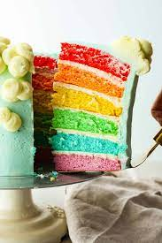

Rainbow Cake

Recipe for Rainbow Cake
Ingredients
- cooking spray
- 3 packages white pudding-
type cake mix
- 9 egg whites
- 4 cups water
- 1 cup applesauce
- 2 cans white frosting
- food coloring
Steps
- Preheat the oven to 350 degrees F. spray
two 9-inch cake pans with cooking spray.
- Combine cake mix, egg whites, water and
applesauce in a large bowl using an electric
mixer. Divide batter evenly into 6 bowls. Mix a different food
coloring gel into each bowl. Pour the red batter and orange batter separately into the prepared
cake pans.
- Bake in the preheated oven until a toothpick inserted
in the center of each cake comes out clean, 25 to 30 minutes
- Remove from the oven and let rest on a cooling rack in the pans for 15 minutes.
Flip quickly onto the rack and remove cakes from the pans.
Continue baking and cooling process with remaining batter until
all layers are colored.
- Shave off tops of the cakes carefully using a large knife so they will be flat.
Place the red layer down, frost the top lightly;continue with orange, yellow, green,
blue and purple.
- Frost the top and outside of the cake. Cut through using a big, sharp knife and serve
back